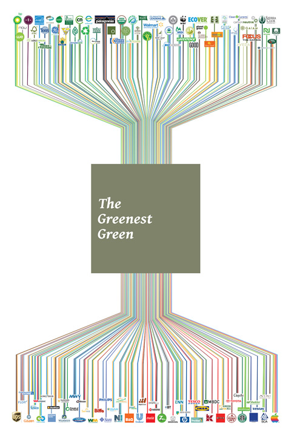

My work revolves around inserting sustainability into my design practice. In attempting to create what I would like to call sustainable graphic design I have had many different stops and starts. I have done things as simple as diagram my carbon footprint and the world’s oil reserves to the writing of essays and rants on the subject. The pieces represented in my exhibition barely scratch the surface as to what I have investigated, contemplated and designed over the last two years. My works are different ways of spreading the myriad messages of sustainability without feeling preachy or condescending. The goal I set for myself has always been to create a simpler understanding of the topic, while making it friendlier, yet still serious. What started out as a simple attempt to uncover an aesthetic for the realm of the sustainable ended up a diverse body of work encompassing many different media.
The first experiments I completed focused purely on visual ideas of sustainability. After a short round of aimless inquiries I came up with the question what does sustainable graphic design looks like? and hoped to answer it with further visual study. I was documenting ideas, thought and quotes I came across relating to sustainability in general and its understanding at large. But as these works continued I began to grow tired of them. The pieces were simply aesthetic experimentation—superficial attempts to answer my questions. They were not pushing my design in any new directions, they were simply collections of nicely styled data and information. Nothing about my early work completely adopted in and of itself the principles ofsustainability I was uncovering.
 The Greenest Green, Understanding Sustainability and A Sustainable Landscape all came from this initial period. They were then subsequently refined into their gallery state. The Greenest Green is a sampling of a randomly curated batch of green, sustainable and green-washed companies. The goal was to present all of these different organizations, companies and brands next to each other and at get viewers considering how WalMart and The National Wildlife Defense Fund might be somehow related—or not related at all. Visually it is truly a sampling. The green color in the center is an average of the CMYK values in all colors used in the collection of logos. I was trying to do was come up with a less arbitrary way of devising a color to use in some of my other works. This piece ends up being an inconclusive commentary on the state of green-washing.
 The diagrams in the Understanding Sustainability pair of prints are refinements and explanations for a variety of similar diagrams to be found online and in texts attempting to simplify the complexity of sustainability into single visuals. These started life as fairly simple sketches in a notebook while I was reading one afternoon. I thought I had stumbled upon something unique and brilliantly simple. I soon found however that these diagrams existed in a multitude of other places and forms. However, my final iterations raise the level of these diagrams from simple visuals into fairly useful tools in explaining and describing how sustainability can work.
The diagrams in the Understanding Sustainability pair of prints are refinements and explanations for a variety of similar diagrams to be found online and in texts attempting to simplify the complexity of sustainability into single visuals. These started life as fairly simple sketches in a notebook while I was reading one afternoon. I thought I had stumbled upon something unique and brilliantly simple. I soon found however that these diagrams existed in a multitude of other places and forms. However, my final iterations raise the level of these diagrams from simple visuals into fairly useful tools in explaining and describing how sustainability can work.
The last piece to end up in the gallery from my initial explorations is the work A Sustainable Landscape. This began as an exercise in the development of systems and toolkits for creating design. All of the forms were created from a small subset of lines and geometric shapes. These shapes were combined into trees, buildings and people and then subsequently combined into a little world. Part of the piece will be in disseminating the digital files through the internet and attempting to collect additional forms created by others. The stable of forms can be continually increased as others add their vision of sustainability to the kit of parts. When printed for the gallery installation A Sustainable Landscape used the end of a paper roll leftover from printing my own and my peers other thesis works. The bends, creases and scuff marks on the paper are the visual truths to this re-use—normally these last few feet of a roll are useless to those wanting “perfect” prints.
I was next led to start more writing and intensified my reading and research into the philosophies at the root of sustainability. The more I read and wrote however, the more I felt that I could not justify actually creating physical objects as part of my practice. It seemed to much of a material waste. Here I was looking at ways to reduce consumption and improve the materiality of the goods we actually create and I wanted to print posters and make booklets out of ink and paper. I felt like a hypocrite. However, venturing further into the realm of the purely written word made me feel no less lost.
Having spent quite a lot of time trying to verbally describe where sustainability exists, I wanted to reference how we already understand our world and individual lives. This created several new directions. Some simple diagrams describing the complexity that is the sustainable world were refined thanks to this extra time spent musing (The Greenest Green and Understanding Sustainability). What also came from my attempts at making “nothing” were my final two gallery pieces. I had a better understanding of what I wanted to create, and set out to make objects that better embodied the principles I kept seeing repeat in my research. Anything I made moving forward had to either re-used existing materials, or else coalesce from what I already had, become objects in my installation, and then return to their former lives once the gallery show ended. I managed to do this in my last two pieces.
Hello, My Name Is… was an effort to make the messages of sustainability less condescending and more facile for uptake by a still fairly unfamiliar public. If the phrasing and communication of sustainability’s ideals can be made more palatable, more understandable, easier or friendlier we will have a better chance at succeeding in its implementation. The work also was the first that re-used a material. All of the prints were made over an existing publication done in collaboration with the rest of my Graphic Design MFA peers. The pages were cut down just enough to fit through a laser-printer and the typography was over-printed on top of the existing designs. This was able to combine both the written messaging I was presenting as well as the principle of “re-use.” A step forward was made. In producing the piece I was also forced to make design decisions based on the constraints of my existing materials. To properly overprint my new text I had to put the typography into large black boxes and knock the text out to the page color to make everything legible. Using this constraint took away some of the other aesthetic choices I may have made purely subjectively and forced a pragmatic solution. I would like more of my work to take this direction.
 In the end my thinking on the topic of sustainability has been influenced by a huge quantity of things. The piece Principles of Sustainability managed to coalesce these many ideas and practices into one synergistic piece. The objects used in the sculpture were existing objects I had or found, and are able to go back to their original state upon completion of the installation. The piece used all the books I had collected for my research. a found bookshelf, books from a book exchange that were turned into plaques (these will simply be returned to the book exchange), as well as several meters of embroidery floss (while new, this can still be reused for other work or necessity—maybe I’ll take up embroidery).
In the end my thinking on the topic of sustainability has been influenced by a huge quantity of things. The piece Principles of Sustainability managed to coalesce these many ideas and practices into one synergistic piece. The objects used in the sculpture were existing objects I had or found, and are able to go back to their original state upon completion of the installation. The piece used all the books I had collected for my research. a found bookshelf, books from a book exchange that were turned into plaques (these will simply be returned to the book exchange), as well as several meters of embroidery floss (while new, this can still be reused for other work or necessity—maybe I’ll take up embroidery).
The principles that I found important did not appear in every text I read on sustainability. Interconnections had to be spawned through my own investigation. From this web of ideals I created my own sustainable commandments and my own “bible” from which they come. My sustainability bible is a entire bookshelf, composed of 23 different books (and growing) by different authors in different times. Each book covers different topics, ethics, arenas of action and fundamentals. Together they provide fairly broad coverage that relates sustainability to our lives and design. Through the piece I have done the investigative work for the viewer, present them with the principles I find most useful, and provide them with the tools to further research those if they so desire.
Having now finished with my exhibition and graduate coursework I keep asking myself how I can continue to grow these ideas and processes. How do I keep creating work, and yet not have to consume more and more material? Part of my installation was being able to uptake some of the waste from my other processes and print runs. This model only works if there continues to be a steady stream of waste to re-use—it requires a consumption driven society to live in symbioses with.
Something that keeps running through my head that may allow me to do this longer term on a professional scale is to try and further de-materialize my design practice. I will pose a new question to myself: how do I stop needing to use materials in the creation of my work? I can migrate more and more of my ideas and projects to the web—but the virtual world seems like the easy way out. I am interested in still creating physical objects. If my Principles of Sustainability piece is any indicator, I believe I can find a way to keep creating visual work and graphic design that simply uptake existing pieces, uses them for what is required, and returns them to their original use or even into another work once finished.